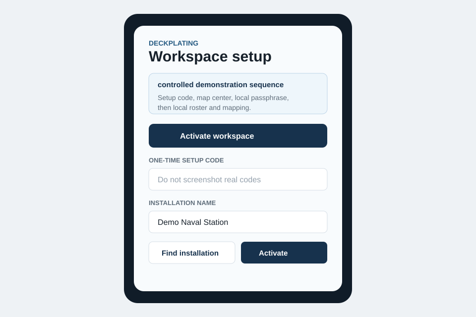
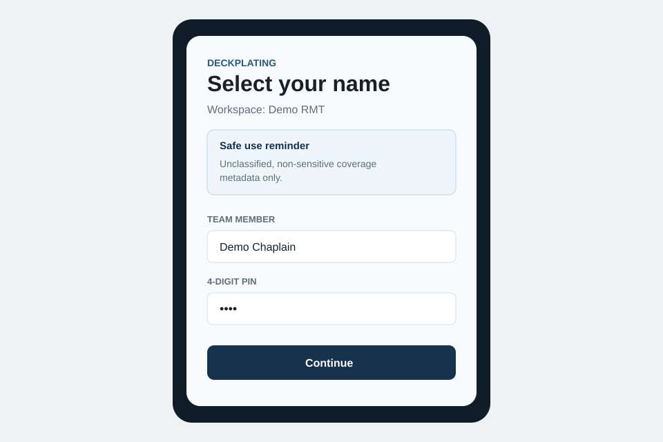
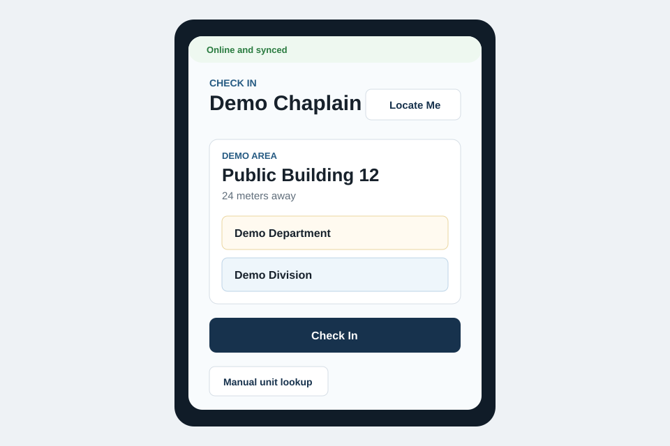
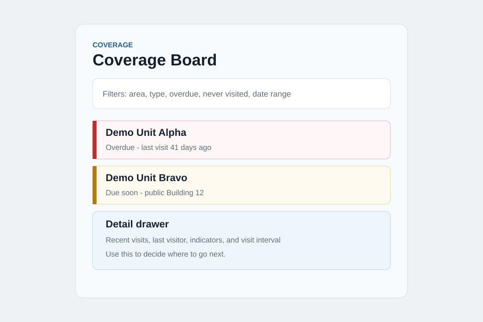
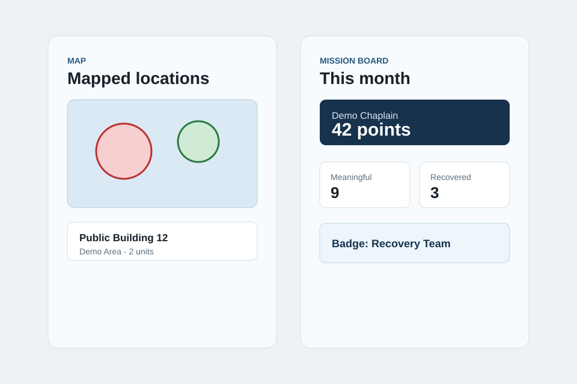
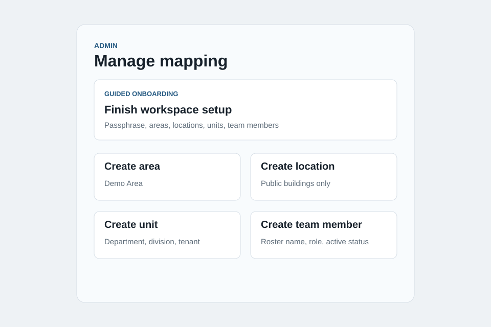
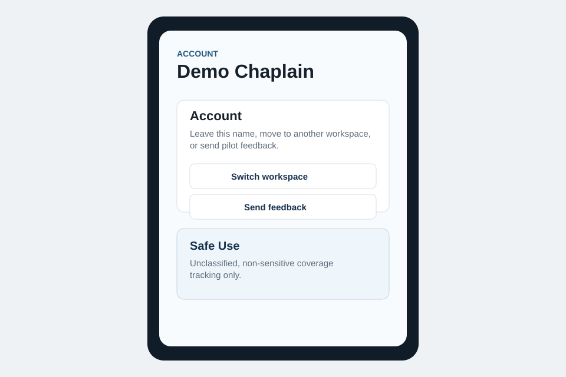

A mobile-first web app for unclassified, non-sensitive check-ins, coverage status, map views, search, and Mission Board recognition.
Managed pilot guide
How to use Deckplating without guessing.
This guide is for approved managed pilots using deckplating.netlify.app. It covers workspace activation, local setup, check-ins, coverage views, admin tools, account switching, feedback, and safe-use boundaries.
Teach first
Select workspace, choose name/PIN, Locate Me, manual lookup, confirmation, and sync status.
Data boundary
Use only unclassified, non-sensitive coverage metadata. Do not store counseling, medical, personal, or sensitive operational details.
About Deckplating
What it is, who it is for, and why it matters
Deckplating is a coverage-awareness tool for Religious Ministry Teams. It helps the team see where routine ministry presence is happening, where coverage is stale or missing, and what should be visited next.
Chaplains, Religious Program Specialists, RMT leads, and local teams covering many departments, divisions, tenant commands, or worksites.
A shared picture of recent visits, neglected units, public/general mapped locations, admin corrections, activity history, and safer continuity across turnover.
Without a simple coverage picture, teams can spend limited time on familiar spaces while quiet or geographically scattered units go unseen.
Important boundary
Deckplating is not a counseling record, medical tracker, case-management system, official record, CUI system, classified system, or place to store sensitive operational details.
Select workspace
Use the approved workspace slug or link

Scrubbed demo screenshot. Do not capture real setup codes.
What you see
Workspace setup with Select workspace and Activate workspace.
What you click
Choose Select workspace, enter the approved slug, then click Use workspace.
Expected result
The roster name picker appears when local setup is complete.
Common mistake
Entering the installation name instead of the workspace slug.
Safe-use reminder
Do not screenshot workspace links that include sensitive context, setup codes, or passphrases.
Activate workspace
One-time setup code, map center, local admin passphrase
- Click Activate workspace.
- Enter the one-time setup code from the operator.
- Confirm workspace display name.
- Use Find installation to set the public map center.
- Set the local admin passphrase.
- Click Activate workspace.
Expected result
The local lead enters Admin and finishes areas, locations, units, and roster.
Common mistake
Treating activation like public signup. Setup codes are centrally issued for approved workspaces.
Safe-use reminder
Never paste setup codes or passphrases into forms, chat, docs, or screenshots.
Choose name and PIN
Register a normal user device

What you see
Roster dropdown, 4-digit PIN field, and safe-use reminder.
What you click
Select your own name, enter your PIN, then click Continue.
Expected result
The app opens for normal use and registers that device.
Common mistake
Sharing PINs or using another person's roster identity.
Check In
Nearby mapped-location flow

What you see
Sync status, Mission Brief, Locate Me, nearby location, unit checkboxes, and Check In.
What you click
Click Locate Me, select one or more units at that one location, click Check In, review confirmation, then click Done.
Expected result
The visit saves and coverage/Mission Board context updates.
Common mistake
Closing the app before confirmation when the network is weak.
Safe-use reminder
Do not enter notes, names, counseling details, or incident details.
Manual check-in
Fallback when GPS is unavailable or location stays unmapped
- Click Manual unit lookup.
- Search for a command, department, building, or area.
- Choose one mapped location and attached units, or one unmapped unit by itself.
- Submit the manual check-in.
- Review confirmation and click Done.
Expected result
The visit records without GPS verification.
Common mistake
Combining unrelated unmapped units into one visit.
Safe-use reminder
If a location should not be shared, leave it unmapped and use manual check-in.
Coverage Board
Decide where attention should go next

What you see
Search, filters, unit cards, status colors, detail drawers, reports, and generic indicators.
What you click
Search by command, department, building, area, status, or visitor; filter by area/type/status/date; then click a unit card for details. In Reports, load the referral/care report and search by location or area.
Expected result
The team can prioritize overdue, never-visited, and due-soon units.
Common mistake
Using it only as a productivity leaderboard.
Safe-use reminder
Indicator totals are generic counts, not case records.
Map
Public mapped locations and offline fallback

What you see
Mapped public locations, radius circles, location search, location cards, and cached list fallback offline.
What you click
Open Map, search by building, area, command, or department, tap a location card, and review attached units.
Expected result
Users understand mapped public/general locations and attached units.
Common mistake
Mapping sensitive rooms or spaces because they are operationally useful.
Safe-use reminder
Map only publicly identifiable buildings or general areas.
Mission Board
Recognition for meaningful coverage
- Open Scores.
- Review weekly winners, the selected month winner, score, meaningful visits, distinct units, recovered units, active days, and badges.
- Use top needs to inform the next visit.
Expected result
The board rewards recovery, breadth, and consistency.
Common mistake
Chasing repeated easy check-ins instead of overdue or never-visited units.
Safe-use reminder
Mission Board should never shame named people, ranks, faith groups, commands, or roles.
Admin unlock
Local workspace-admin configuration

What you see
Admin, workspace name, and local admin passphrase.
What you click
Enter the local admin passphrase and click Unlock.
Expected result
Admin opens to Locations, Activity Log, and Admin settings.
Common mistake
Using the central operator passphrase or expecting an email account login.
Create local setup records
Areas, locations, units, team members, and PIN reset
Areas
Use setup search when the saved list is long. Create broad, non-sensitive groups for routing and scanning. Avoid making areas too granular.
Locations
Create public/general mapped locations, set coordinates/radius, and attach units.
Units
Create departments, divisions, or tenant commands and set visit intervals.
Team members
Add roster names, then send the workspace link. There are no email invitations yet.
Reset PIN
Use Reset PIN and revoke devices when a member forgets a PIN or device access should be revoked.
Checklist
Hide or complete the onboarding checklist after local readiness items are done.
Safe-use reminder
Do not add sensitive mission details, phone numbers, email addresses, birth dates, family details, or precise sensitive locations.
Activity Log and Admin settings
Correct records and configure local settings
Activity Log
Search by unit, location, area, team member, care, or referral. Filter by date, member, area, or unit. Use Load more activity for older records. Correct unit/member/time/indicator mistakes or soft-void duplicate and accidental records.
Common mistake: trying to erase history. Voided records stay auditable and stop affecting score and coverage.
Admin settings
Set Mission Brief tone and rotate the local admin passphrase.
Common mistake: confusing Admin settings with the user Account tab.
Account
Switch workspace, sign out, and send feedback

What you see
Bottom tab Account, identity controls, Sign out of this account, Switch workspace, Send feedback, and Safe Use.
What you click
Use sign-out for the current name, switch workspace for another approved workspace, or send feedback to the setup-site form.
Expected result
The user can leave a name or workspace without reinstalling the app.
Common mistake
Switching identity while visits are waiting to upload.
Feedback
Send non-sensitive pilot feedback
- Open Account > Send feedback, or go to deckplatingsetup.netlify.app/#feedback.
- Choose setup, week one, closeout, or urgent blocker.
- Choose onboarding confusion, operational blocker, feature request, or safe-use question.
- Submit concrete, non-sensitive details.
Expected result
Feedback is reviewed manually and used to choose the next fix or pilot step.
Common mistake
Putting setup codes, passphrases, real names, or operational details in the form.
Safe-use boundaries
What never belongs in Deckplating
Deckplating stores only the minimum unclassified, non-sensitive coverage metadata needed to track ministry presence.
- No CUI or classified information.
- No counseling notes or medical details.
- No incident details, family information, addresses, phone numbers, email addresses, or dates of birth.
- No sensitive operational locations.
- No setup codes, passphrases, hashes, service keys, or production secrets.
When uncertain
Do not map the location, do not add the detail, and use command-approved channels outside Deckplating for urgent safety or operational matters.